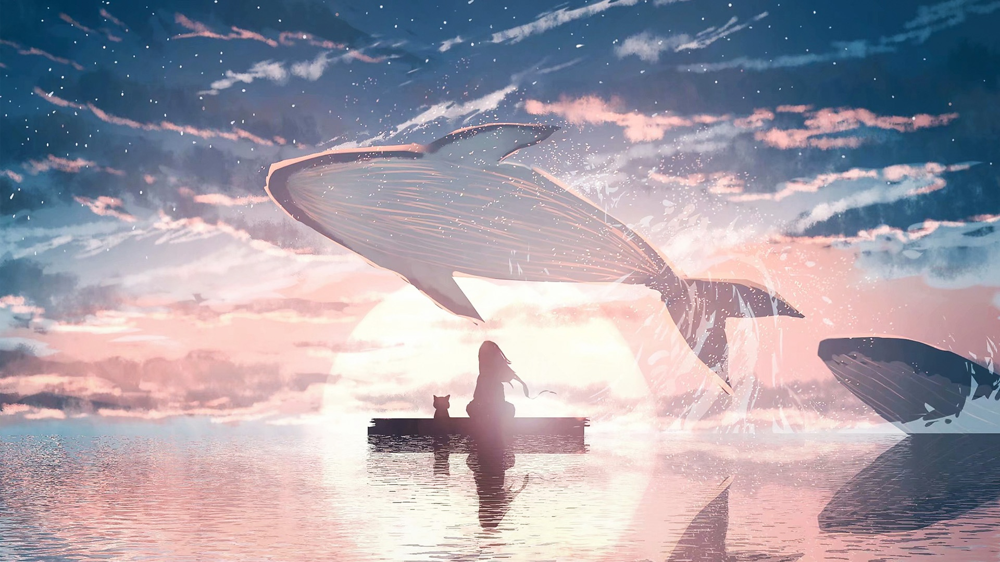
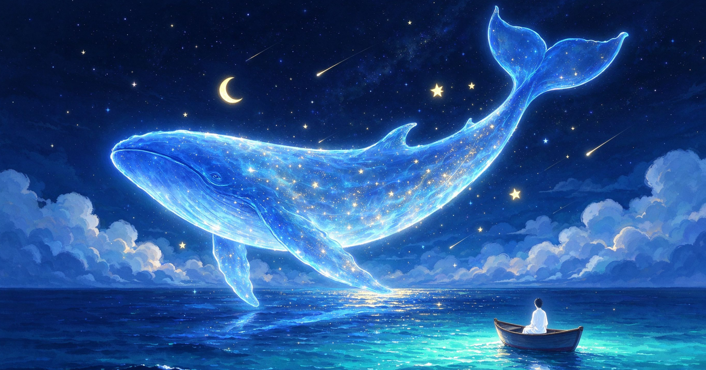
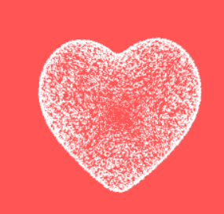

我的作品展示

双层3D旋转立方体相册
CSS3‑Transform实现双层旋转立方体相册，支持点击切换扩散效果，搭配流星粒子背景与音乐开关，共12张图片展示。
收获
搞懂了 transform-style: preserve-3d 与六个面的空间定位，第一次把坐标系想象真正用在了页面上，也学会了用 JS 控制 CSS 动画的节奏。
点击查看作品

自我介绍网页
就是现在这个网站，包含多页面导航、卡片布局、以及丝滑的 CSS 动画效果和留言板交互功能。
收获
把多页面统一样式抽成公共 CSS 和 JS，理解了组件化复用；做留言板时踩过 XSS 的坑，学会了转义用户输入，也用 IntersectionObserver 做出了滚动入场。
返回首页

3D跳动毛刺爱心
基于Three.js实现的三维爱心动画，使用噪声算法做出毛刺畸变效果，搭配GSAP实现心跳缩放与自转效果。
收获
第一次用 Three.js 搭建场景、材质与几何体，学会了用噪声函数扰动顶点做形变，再交给 GSAP 编排心跳动画，体会到数学和视觉结合的乐趣。
点击查看作品